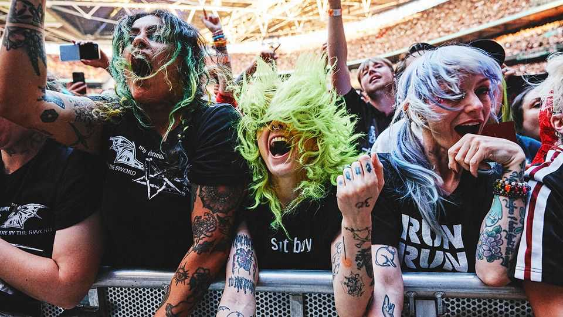
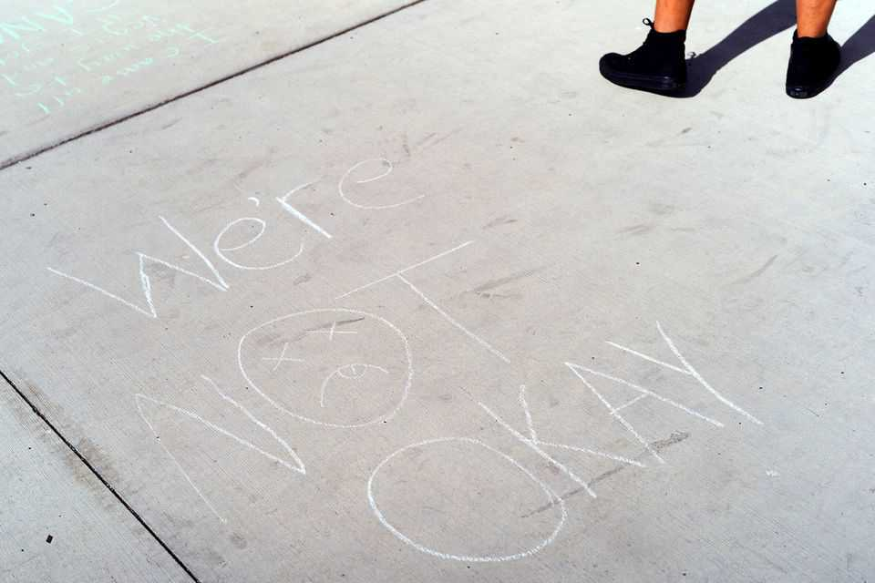

Emo culture was not just a phase, as it turns out
The business of misery is thriving as emo bands go back on tour
July 16th 2026

EMO CULTURE was all the rage in 2006. In fact, rage was part of the appeal: “emo” stands for “emotional hardcore”, a style of music that combines intense punk-rock stylings with introspective lyrics. Bands such as My Chemical Romance, Fall Out Boy, Panic! at the Disco and Paramore made the upper reaches of the charts in America and Britain. Teenagers sporting heavy black eyeliner and side fringes gathered in city centres and posted moody selfies on Facebook and Myspace.
Now emo is back. My Chemical Romance is marking the 20th anniversary of its album “The Black Parade” with a worldwide stadium tour. The band recently played three gigs at Wembley Stadium in London. Each night the 90,000-capacity venue was packed with screaming fans who had dug out their studded belts for the occasion.
It is not just My Chemical Romance that is getting fans in their feels. Fall Out Boy has toured in recent years. All Time Low played its biggest show ever at the O2 Arena in London earlier this year. Jimmy Eat World is currently on tour to celebrate the 25th anniversary of its “Bleed American” record. (One track urges the listener not to “write yourself off yet”—the band seemingly took its own advice to heart.)

The genre’s comeback has been building for some time. When We Were Young, a pop-punk and emo festival, launched in California in 2017 and has since moved to a bigger spot in Las Vegas. It has proved there is still a market for misery. But the trend is reaching its zenith now because of the 20-year nostalgia cycle that affects everything from fashion to games and tv shows.
Today fans can find dedicated emo club nights and brunches. Dana Egan leads spin classes at Psycle, a fitness studio in London, to an emo soundtrack. She is thrilled to see the music making a return; she was “always an emo kid”.
The crowds at concerts often span the generations. Millennials—the original emos—attend alongside Gen Z fans who discovered the bands after most had split up. Rhys Boyle, one such follower, says that “My Chemical Romance broke up when I was 13. And I remember thinking, ‘Oh man, I’m not gonna be able to see them live ever.’”
Fans insist emo has endured because it offers a sense of empathy and community in hostile, bewildering times. “A lot of people who are emo are a bit neurodivergent, a bit queer and a bit weird,” says Nez Ray, a fan at Wembley; the music makes them feel as though they are not alone. Perhaps the angst and the eyeliner are here to stay, then. As “Welcome to the Black Parade”, My Chemical Romance’s biggest hit, puts it: “We want you all to know/We’ll carry on.”■
For more on the latest books, films, TV shows, albums and controversies, sign up to Plot Twist, our weekly subscriber-only newsletter